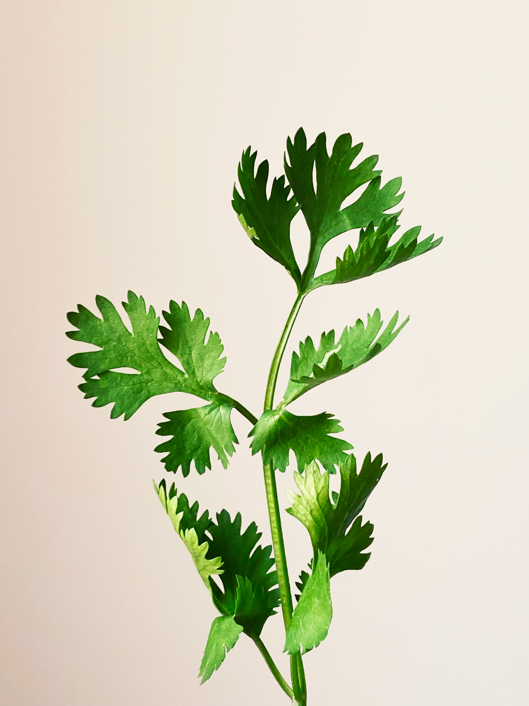

Salsa
Beneficio da salsa
Contradição
Não há
indicação

Estimulantes da digestão, antirrugas e diuréticos
formas de uso
decocto ou na comida
Dosagem
decocto 3 a 4 checaras por dia
Partes usadas
Planta toda
Outras Indicações
hidropisia estrumações difíceis nefrite cistite cólicas celulites, espasmos e tosse
Nome Cientifico
petroselinum crispum
Nome popular
salsa
Familia
apiaceaes